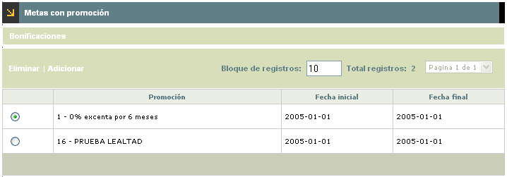
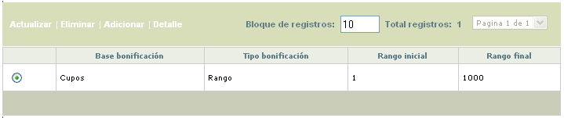
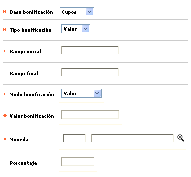
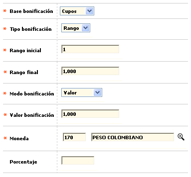
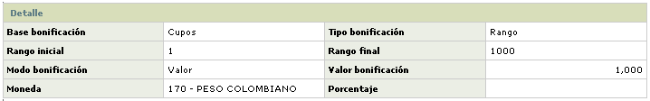

Comisiones y metas - Metas con promoción
Metas con promoción:En este espacio se registran los ingresos que devengarán los promotores por cumplir la meta de finalizar las tareas asignadas durante un período de tiempo esperado y sobre productos que pertenecen a algún programa de promoción de colocación. Los parámetros que se definan en este espacio sumarán en la liquidación de ingresos de los promotores junto con los ingresos definidos en la carpeta comisiones, correspondiendo estas últimas a las que devenga el promotor sobre productos que en el momento de la solicitud se asociaron a un programa de promoción, y las de esta carpeta, que responden a un objetivo diferente y específico.
El formulario contiene las opciones Eliminar, Adicionar y Bonificaciones.

Adicionar: Si el usuario invoca la opción Adicionar se despliega un formulario con los siguientes campos:

|
Promoción |
Campo con lista de valores que contiene las promociones para colocación de productos definidos por la entidad previamente, de la cual se selecciona la promoción a la que debe pertenecer el producto para que el promotor devengue la comisión definida por la culminación de la actividad. |
|
Fecha inicial |
Campo en formato YYYY-MM-DD, obligatorio, en el que se define el momento de inicio del período para el cumplimiento de metas. |
|
Fecha final |
En este campo en formato YYYY-MM-DD, obligatorio, se define el momento de finalización del período para el cumplimiento de metas. |
Bonificaciones:

El formulario contiene las opciones Actualizar, Eliminar, Adicionar y Detalle.
Adicionar: Si el usuario invoca la opción Adicionar se despliega un formulario con los siguientes campos:

|
Base bonificación |
Campo en el que se define cual será la base sobre la cual se liquidará el incentivo a los promotores por finalización de tareas en el tiempo previsto y que puede estar dada en términos de número de Tarjetas, o como Cupos correspondiente al monto aprobado de los productos. |
|
Tipo bonificación |
Este campo le otorga la característica al registro, de permitir o no la definición de rangos. La opción valor, expresa que no pertenece a una condición de inicio y fin, sino a un único valor; mientras que la opción rango expresa que se delimita el valor de inicio y el valor final para que el promotor devengue el incentivo de acuerdo con los parámetros de base y período establecido para el cumplimiento de la meta. |
|
Rango inicial |
Campo numérico de 12 posiciones enteras y 2 decimales, obligatorio, en el que se registra el valor de inicio (tarjetas o cupos) a tener en cuenta en el momento de la liquidación de bonificaciones a promotores por la finalización de las tareas dentro del período de tiempo esperado. |
|
Rango final |
Si en Tipo Bonificación se define que es un rango, entonces este campo numérico de 12 posiciones enteras y 2 decimales se habilita y se vuelve obligatorio; en él se registra el valor límite (tarjetas o cupos) a tener en cuenta en el momento de la liquidación de bonificaciones a promotores por la finalización de las tareas dentro del período de tiempo esperado. |
|
Modo bonificación |
Campo con lista de valores de la cual la entidad selecciona la manera cómo aplicará la bonificación del promotor por la tarea terminada y que puede ser un Porcentaje o un Valor absoluto. |
|
Valor bonificación |
Este campo se activa cuando en el campo modo bonificación se ha seleccionado la opción valor y en él se registra el monto del mismo; indica que por la tarea terminada sobre cada producto definido, el promotor devenga determinado valor. |
|
Moneda |
Al igual que el anterior, este campo se activa cuando en modo bonificación se ha elegido la opción valor, y en el se selecciona a través de la lista de valores la Moneda en la cual se expresa el valor de la bonificación. |
|
Porcentaje |
Cuando en el campo modo comisión, se selecciona la opción porcentaje, este campo se activa para permitir registrar la cifra respectiva a aplicar sobre el monto de cupo aprobado de cada producto definido del cual se ha finalizado la tarea, siendo este el valor de la bonificación. |
Actualizar: Si el usuario invoca la opción Actualizar se despliega un nuevo formulario en cual los únicos campos modificables son los siguientes:

Detalle: Si el usuario invoca la opción Detalle se despliega el siguiente formulario.
